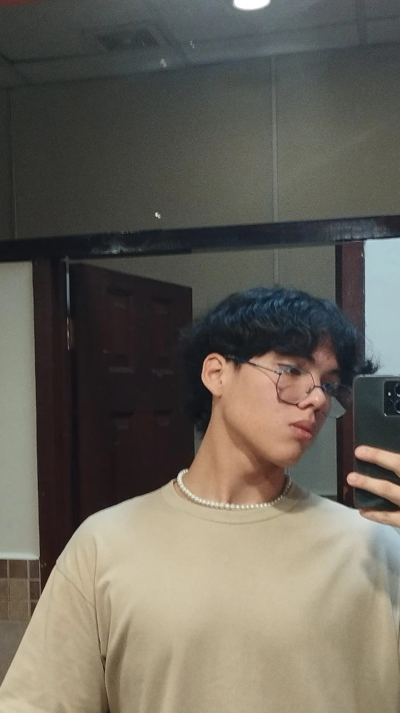

Nuestra esencia
Dolce Luchie
La magia del sabor de hogar
Dolce Luchie es una propuesta de postres caseros creada para compartir momentos dulces, cercanos y memorables. Cada detalle combina sabor, calidez y una estetica delicada, con la intencion de convertir un antojo sencillo en una experiencia especial.
El equipo detras del proyecto
Desarrolladores
Conoce a las personas que dieron forma a esta experiencia digital, uniendo tecnologia, diseno y sensibilidad por los detalles.
Javier Ernesto Canesa Aguilar
Desarrollador JR
Estudiante de 4to año de Ingeniería en Sistemas Informaticos con pasión por la programación y el diseño web. Con aspiraciones de salir adelante en el mundo de la tecnología, asi mismo amante a la aventura en la naturaleza.
Luciana Carolina Urrutia Escobar
Desarrolladora JR
Estudiante de tercer año de Ingeniería en Sistemas Informáticos, apasionada por el diseño visual y la organización de datos. Combina su interés por la tecnología con su creatividad en la repostería casera. Con visión de crecimiento y gusto por los detalles, busca unir lo técnico y lo artístico en cada proyecto.
Ricardo Abraham Morán Martínez
Desarrollador JR
Estudiante de 3er año de Ingenieria en Sistemas Informáticos, aficionado por la creación de redes, con un gran interés en el area de soporte de TI, con el proposito de siempre brindar soluciones a los demás,

Nombre
Desarrollador JR
Descubrí en la repostería una forma de catarsis, un espacio donde podía transformar emociones en algo dulce y significativo. Con el tiempo, esa pasión se convirtió en una idea: crear postres no solo para disfrutar, sino también para compartir pequeños momentos de felicidad. Así nació la iniciativa de “Dolce Luchie”, pensando en que, a veces, un detalle tan simple como un postre puede ser ese rayo de sol en un día nublado. Porque incluso en medio de momentos difíciles, un pequeño sabor dulce puede arrancar una sonrisa y cambiar, aunque sea un poco, el rumbo del día.